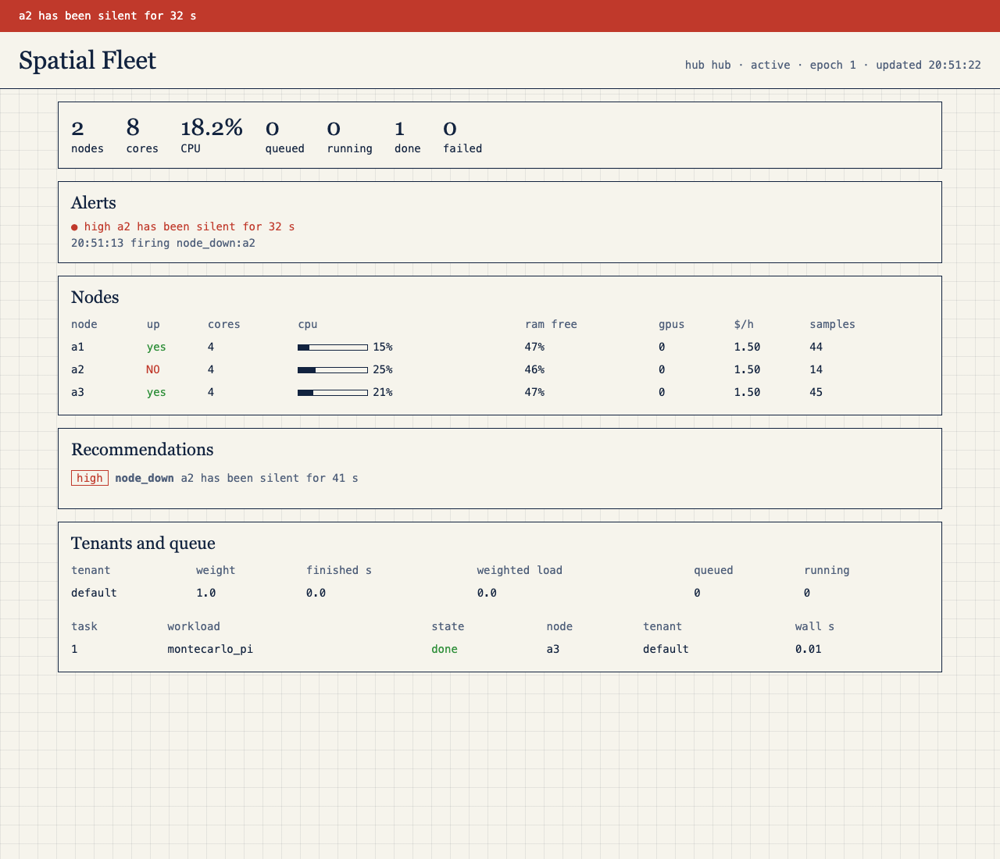

Exploitation
Faire tourner le hub de la flotte pour de vrai : redémarrages, bascule, tableau de bord local, alertes. Mesuré sur une machine ; ce qui n'est pas garanti est dit.
Tableau de bord
spatial dashboard ouvre une page en lecture seule : nœuds avec barres de CPU, alertes, recommandations (les économies sont marquées comme estimations), locataires et file de tâches, plus le rôle et l'époque du hub. Elle est servie sur 127.0.0.1 uniquement (aucune option pour écouter ailleurs), exige une clé aléatoire affichée au démarrage, refuse les en-têtes Host hors boucle locale (rebinding DNS) et n'accepte que GET. Pour une autre machine, utilisez un tunnel SSH.

Alertes
spatial watch et le bandeau du tableau de bord transforment les recommandations de gravité haute en événements : un quand une condition apparaît, un quand elle disparaît. --webhook URL les envoie en JSON ; cela envoie des données de la flotte à l'adresse indiquée.
Persistance et redémarrage
--state-file sauvegarde les tâches, la file et l'usage par locataire toutes les 5 s (écriture atomique). Après un redémarrage, les tâches en cours sont remises en file (les charges sont des fonctions pures : les exécuter deux fois est sans danger) et les agents se reconnectent seuls. Les mesures des nœuds ne sont pas sauvegardées ; les agents les reconstruisent en un intervalle de rapport.
Haute disponibilité
| Mode | Comment | Garantie |
|---|---|---|
| Deux hubs | --peer : actif et secours, le secours copie l'état et se promeut après 6 s | Bascule rapide ; pas un consensus : en cas de partition les deux peuvent être actifs, puis l'époque la plus basse s'efface et perd son état divergent |
| Trois hubs ou plus | deux --peer ou plus : élection à la majorité avec mandats, votes et baux | Au plus un chef par mandat ; un hub coupé de la majorité refuse les requêtes ; l'état circule encore par instantanés, donc jusqu'à une seconde de changements peut être perdue à la bascule ; pas un journal répliqué |
Mesuré sur un Mac, deux processus hub et un agent, kill -9 sur le hub actif, 3 essais : une tâche soumise avant l'arrêt s'est terminée sur le survivant 6,7 s plus tard à chaque fois. Mode quorum : exécution aléatoire de 220 tours avec arrêts et redémarrages aléatoires de 5 hubs, aucun mandat n'a eu deux chefs (horloge simulée, vraies connexions en boucle locale).
Endurance
Test d'endurance (benchmarks/soak.py) : un hub, 3 agents, un client qui soumet une tâche toutes les 0,5 s avec des connexions qui tournent et un tableau de bord qui interroge, pendant 15 puis 12 minutes sur un Mac. Aucune erreur sur 1 758 et 1 419 tâches ; descripteurs de fichiers et fils d'exécution stables. Le premier essai a montré la mémoire du hub croissant de 12,5 Mio/h parce que les tâches terminées étaient gardées indéfiniment ; elles sont maintenant plafonnées (--max-finished). Des minutes, pas des jours : des fuites plus lentes ne sont pas exclues.
Passage à l'échelle
| Agents | Rapports/s | Rapport p50 / p99 | status / advise | RSS du hub |
|---|---|---|---|---|
| 100 | 50 | 0,7 / 4 ms | 2 / 1 ms | 69 Mio |
| 300 | 149 | 0,8 / 2 ms | 9 / 5 ms | 78 Mio |
| 1 000 | 477 | 0,8 / 15 ms | 36 / 35 ms | 109 Mio |
Les agents simulés sont des fils d'un même processus qui partagent deux cœurs avec le hub : les latences sont des majorants. Lors de la rafale de 1 000 agents, 31 connexions ont été réinitialisées (un vrai agent réessaie). Trouvaille en chemin : la file d'attente d'écoute du serveur (5) refusait les reconnexions simultanées ; elle est à 1 024.
docs/HA.md, docs/INFRASTRUCTURE.md.